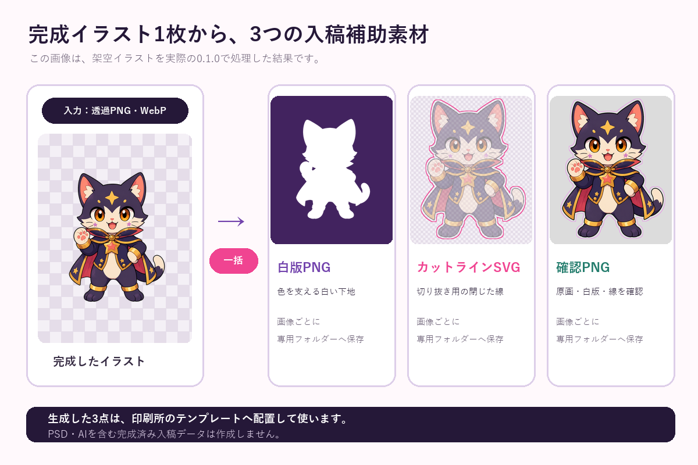

原画、白版、カットラインを別々に作ると、位置ずれや細部の欠けに気づきにくくなります。1枚の確認画像へ重ねると、注文前に見直す場所が分かります。

確認画像で見る場所
- 白版が原画の外側へ見えていないか
- 目、文字、細い線、小さなパーツが白版から消えていないか
- カットラインが絵柄へ近過ぎないか
- 透明にした穴や隙間が意図どおり残っているか
- 離れたパーツを1つの外周にまとめる必要がないか
確認PNGは入稿データそのものではない
確認PNGは、原画・白版・カットラインの関係を目で確認する補助画像です。最終データは印刷所のPSD・AIテンプレートへ配置し、指定のレイヤー名、実寸、余白へ合わせます。
印刷所のおまかせ入稿で白版・カットラインを自動生成する場合、この作業を購入者が行う必要はありません。別データを用意する通常入稿や、縮小幅・余白を自分で指定する場合の確認手順です。
差し替え後も3点を作り直す
原画を修正した場合は、以前の白版やカットラインをそのまま使わず、同じ入力から作り直して位置を確認します。複数絵柄では、同じ設定をまとめて適用できると差し替え作業を短縮できます。
3種類をまとめて作成する
Acrylic Underbase Maker Localは、透過PNGを選ぶと、白版PNG、閉じたカットラインSVG、重ね合わせ確認PNGを画像ごとのフォルダーへ生成します。原画は上書きせず、処理はWindows PC内で完結します。
印刷結果、カット精度、すべての印刷所との互換を保証するものではありません。利用先の最新仕様とテンプレートを優先してください。